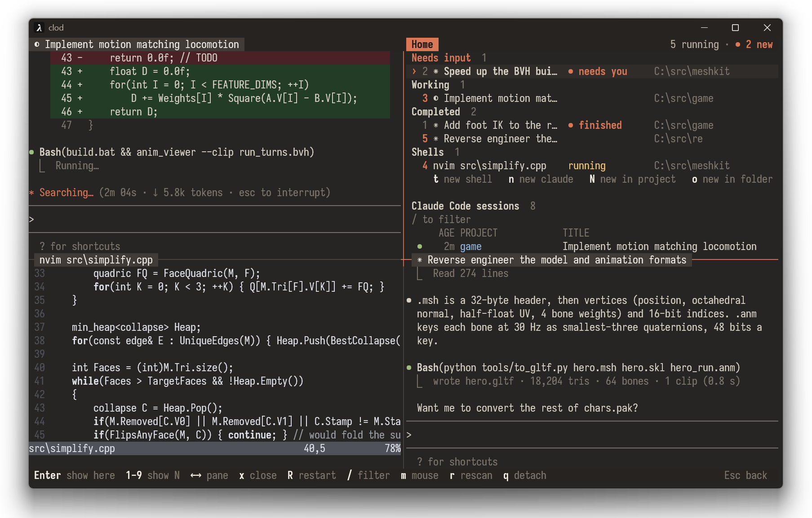
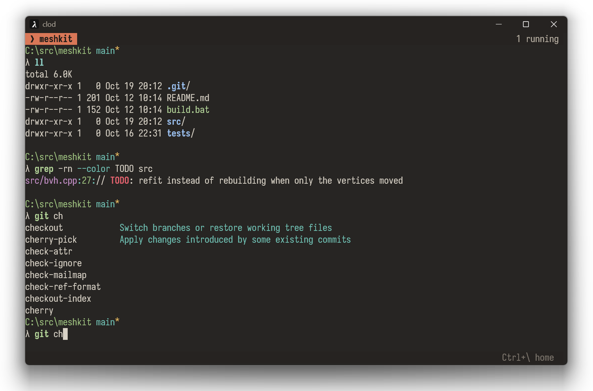
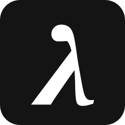

- split panes
- tabs survive restarts and reboots
- tabs keep running in the background
- Claude Code session manager
- tab completion
- autosuggestions
- unix tools from Git for Windows
- built-in image preview
- ~1 ms from key to screen

> winget install clod·source

